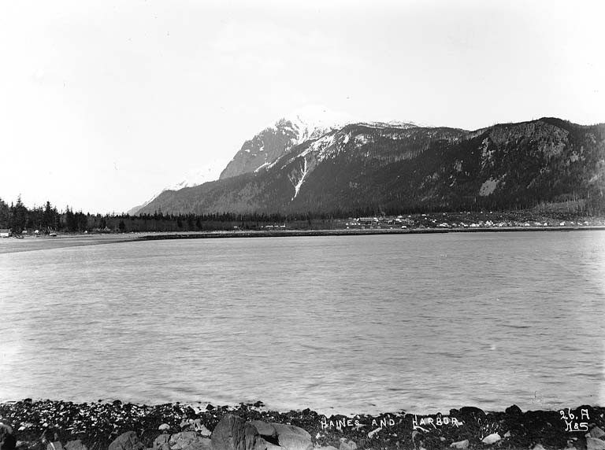
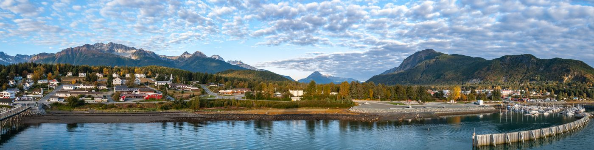

Directory / Southeast Alaska / Haines, AK
Haines tides — Portage Cove Harbor & Chilkoot Inlet
High and low tides for the coming week from NOAA station 9452435 (Haines Inlet — 59.23, -135.433). Times are local (AKST/AKDT). Heights are feet above Mean Lower Low Water (MLLW). Haines sits on the Chilkat Peninsula between Chilkoot and Chilkat inlets at the top of Lynn Canal, about 75 miles north of Juneau by water and 15 miles south of Skagway. The Haines Borough runs the Portage Cove Small Boat Harbor below Fort William H. Seward and the seasonal Letnikof Cove floats on Chilkat Inlet. Unlike Skagway, Haines is on the road system: the Haines Highway runs 150 miles to Haines Junction, Yukon, and the Alaska Marine Highway ferry lands at Lutak Inlet, 4 miles north of town. Each fall the Chilkat River draws one of the largest gatherings of bald eagles in the world, so expect company on the pilings.
A 24-ft tide drop, the Portage Cove grid & a weekday-afternoon fuel dock
The tide swing. NOAA 9452435 is a subordinate station. Its predictions come from Juneau (9452210), with high tides 9 minutes earlier and 0.5 ft higher and low tides 6 minutes earlier. In the NOAA predictions fetched 2026-11-20, Wednesday, November 25, 2026 has a 20.4 ft high at 12:45 PM and then a −3.9 ft low at 7:26 PM. That is a drop of about 24.3 ft in under seven hours, or about 3.6 ft an hour. Christmas Eve is bigger: 20.4 ft at 12:36 PM to −4.2 ft at 7:17 PM (about 24.6 ft). Minus tides come every evening Nov 22–29, Dec 6–11, and Dec 21–28, all between about 5 PM and 11 PM. The harbor basin had 5 to 12 ft at MLLW and the entrance channel 11 ft in the last depth NOAA’s Coast Pilot reports (2011). A deep keel near the inner floats needs a check against those lows. Leave slack in your lines.
Haul-out & grid. Haines has no travelift. The Borough’s 92 by 16 ft timber tidal grid is on the north side of Portage Cove harbor behind the connecting float. The harbormaster schedules it, and it costs $15 minimum or $0.75 per foot per tide cycle (2025 fee schedule). The public launch ramp is just west of the grid. Trailered commercial boats up to 40 ft can be stored on the south lot from Sep 15 to May 15 (10 boats at most), but routine haul-out service and repair are not allowed there. In the next five weeks the best daylight grid lows are about 2.4 ft at 3:05 PM Thu Dec 3 and 2.2 ft at 3:04 PM Sat Dec 19. Those come right at the early winter sunset, so bring lights. The Letnikof Cove floats and the Letnikof and Lutak ramps close from October to April, with no winter maintenance.
Weather & fuel. The api.weather.gov zone lookup at the tide station and the harbor returns PKZ012 Northern Lynn Canal. The run south past Eldred Rock toward Juneau is in PKZ013 Southern Lynn Canal. In the forecast issued 4:15 PM AKST Fri Nov 20, 2026, Northern Lynn Canal builds to north 30 kt with 6 ft seas Monday and Tuesday. Winter outflow winds funnel down the Chilkat and Chilkoot valleys into Lynn Canal, so check the live forecasts below and the Eldred Rock camera before you head down-canal. The Borough fuel dock in Portage Cove is open Mon–Fri 1–4 PM only this winter (closed weekends; call-out fees outside those hours). Delta Western’s upland plant at 900 Main St sells marine fuel and lubricants weekdays 8–5. Harbor office: 907-766-6450, VHF 16 and 12.
Computed from NOAA CO-OPS hi/lo predictions for 9452435 (2026-11-21 through 2026-12-31) and its published offsets from Juneau 9452210; the NWS Juneau coastal waters forecast text and api.weather.gov zone lookups at 59.23,-135.433 and 59.235,-135.44; the Haines Borough ports, fuel-dock hours, Letnikof Cove, 2025 harbor fee schedule and south-lot policy pages; NOAA Coast Pilot 8 chapter 11; and the U.S. Army Corps of Engineers port series entry for the Portage Cove floats, all checked 2026-11-20. Not for navigation.
Haines then & now
Historic

.jpeg){kind=link}
Current


Official NOAA predictions Station home NOAA chart viewer View on Windy
Port Sponsor — Haines, AK
Top placement for fuel, charters, lodges, outfitters, seafood, and marine businesses on upper Lynn Canal.
$25–$50 / month
Tide data: NOAA CO-OPS station 9452435 (subordinate to Juneau 9452210), predictions (hi/lo, MLLW, local standard/daylight time). Refreshed with each nightly build; the marine-weather snapshot time below shows the latest fetch. Chilkat Inlet (9452421) and Taiyasanka Harbor (9452434) are nearby NOAA subordinate stations; see NOAA station pages for Chilkat Inlet and Taiyasanka Harbor.
Wednesday, November 25, 2026
| Tide | Time (local) | Height (MLLW) |
|---|---|---|
| High | 1:08 AM | 16.8 ft |
| Low | 6:46 AM | 2.9 ft |
| High | 12:45 PM | 20.4 ft |
| Low | 7:26 PM | -3.9 ft |
Thursday, November 26, 2026
| Tide | Time (local) | Height (MLLW) |
|---|---|---|
| High | 1:57 AM | 16.8 ft |
| Low | 7:33 AM | 3.1 ft |
| High | 1:31 PM | 20.2 ft |
| Low | 8:13 PM | -3.6 ft |
Friday, November 27, 2026
| Tide | Time (local) | Height (MLLW) |
|---|---|---|
| High | 2:46 AM | 16.5 ft |
| Low | 8:22 AM | 3.4 ft |
| High | 2:21 PM | 19.5 ft |
| Low | 9:02 PM | -2.8 ft |
Saturday, November 28, 2026
| Tide | Time (local) | Height (MLLW) |
|---|---|---|
| High | 3:38 AM | 16.1 ft |
| Low | 9:16 AM | 3.9 ft |
| High | 3:13 PM | 18.3 ft |
| Low | 9:54 PM | -1.7 ft |
Sunday, November 29, 2026
| Tide | Time (local) | Height (MLLW) |
|---|---|---|
| High | 4:34 AM | 15.7 ft |
| Low | 10:17 AM | 4.4 ft |
| High | 4:12 PM | 16.7 ft |
| Low | 10:50 PM | -0.3 ft |
Monday, November 30, 2026
| Tide | Time (local) | Height (MLLW) |
|---|---|---|
| High | 5:35 AM | 15.4 ft |
| Low | 11:27 AM | 4.7 ft |
| High | 5:20 PM | 15.2 ft |
| Low | 11:51 PM | 1.1 ft |
Tuesday, December 1, 2026
| Tide | Time (local) | Height (MLLW) |
|---|---|---|
| High | 6:38 AM | 15.4 ft |
| Low | 12:44 PM | 4.4 ft |
| High | 6:38 PM | 13.9 ft |
Wednesday, December 2, 2026
| Tide | Time (local) | Height (MLLW) |
|---|---|---|
| Low | 12:56 AM | 2.3 ft |
| High | 7:40 AM | 15.7 ft |
| Low | 1:59 PM | 3.6 ft |
| High | 8:02 PM | 13.4 ft |
Marine weather & cameras
NWS marine forecast — Northern Lynn Canal (PKZ012)
Issued 757 PM AKST Tue Nov 24 2026. Snapshot fetched 2026-11-24 21:18 AKST from NWS text product. Official zone forecast · Raw text
...SMALL CRAFT ADVISORY THROUGH LATE WEDNESDAY...
- .REST OF TONIGHT...N wind 25 kt. Seas 5 ft. Snow.
- .WED...N wind 20 kt. Seas 4 ft.
- .WED NIGHT...N wind 25 kt. Seas 5 ft.
- .THU...N wind 25 kt. Seas 5 ft.
- .THU NIGHT...N wind 15 kt. Seas 3 ft.
- .FRI...SE wind 15 kt. Seas 3 ft.
- .SAT...S wind 15 kt. Seas 3 ft.
- .SUN...NE wind 15 kt. Seas 3 ft.
NWS marine forecast — Southern Lynn Canal (PKZ013)
Issued 757 PM AKST Tue Nov 24 2026. Snapshot fetched 2026-11-24 21:18 AKST from NWS text product. Official zone forecast · Raw text
...SMALL CRAFT ADVISORY THROUGH LATE TONIGHT...
...SMALL CRAFT ADVISORY LATE WEDNESDAY...
- .REST OF TONIGHT...N wind 25 kt becoming 20 kt. Seas 5 ft. Near Point Couverden N wind 35 kt. Seas 6 ft. Rain.
- .WED...N wind 20 kt. Seas 4 ft. Rain in the afternoon.
- .WED NIGHT...N wind 15 kt increasing to 25 kt late. Seas 4 ft.
- .THU...N wind 25 kt. Seas 5 ft.
- .THU NIGHT...N wind 15 kt. Seas 3 ft. Rain.
- .FRI...SE wind 10 kt. Seas 2 ft or less.
- .SAT...SE wind 10 kt. Seas 2 ft or less.
- .SUN...NE wind 15 kt. Seas 2 ft or less.
Nearby NDBC observation — Haines Harbor (HAXA2, Marine Exchange of Alaska, Portage Cove)
wind 260°, 6 kt, gust 15 kt, air 30°F
Observation time 2026-11-24 21:02 AKST (converted to AKST). Attribution: NOAA NDBC station HAXA2. Snapshot fetched 2026-11-24 21:18 AKST.
Nearby NDBC observation — Eldred Rock (ERXA2, Marine Exchange of Alaska, mid–Lynn Canal)
wind 360°, 15 kt, gust 19 kt, air 33°F, 993.8 hPa
Observation time 2026-11-24 21:02 AKST (converted to AKST). Attribution: NOAA NDBC station ERXA2. Snapshot fetched 2026-11-24 21:18 AKST.
Nearby NDBC observation — Skagway Harbor (SKXA2, Marine Exchange of Alaska, about 13 NM up Taiya Inlet)
wind 40°, 11 kt, gust 25 kt, air 35°F
Observation time 2026-11-24 21:02 AKST (converted to AKST). Attribution: NOAA NDBC station SKXA2. Snapshot fetched 2026-11-24 21:18 AKST.
Harbor webcams
- FAA WeatherCams — Haines (PAHN) (four views from Haines Airport, 3 miles west of town, across Chilkat Inlet and up Lynn Canal; link only, not embedded)
- FAA WeatherCams — Eldred Rock (north, south, west, and northwest views from the lighthouse rock in mid–Lynn Canal; check sea state here before a run to Juneau; link only)
- FAA WeatherCams — Skagway Airport (PAGY) (views down Taiya Inlet, useful for the north-wind picture up-canal; link only)
All three FAA camera pages loaded on 2026-11-20 around 9:20 PM AKST; the Haines, Eldred Rock, and Skagway images were last confirmed updating within minutes on 2026-11-19. Expect dark frames on winter nights. We found no free public camera aimed at the Portage Cove floats. Harbor businesses with a public cam: email us and we will link it.
Haines boater notes (official links)
- Haines Borough Ports & Harbors. Portage Cove Small Boat Harbor has room for about 200 boats behind its north and east breakwaters. The harbormaster assigns transient berths (2025 rate $0.75 per foot per day for stays under two weeks). Summer water and power at the floats; a seaplane float sits at the south wharf. Harbormaster Henry Pollan: 907-766-6450. Office: 32 South Front St. Winter office hours Mon–Fri 8–5.
- Harbor office & fuel-dock hours (fuel Mon–Fri 1–4 PM in winter) and the 2025 harbor fee schedule (moorage, ramp stickers, grid).
- Use it or lose it: Borough harbor letters (Aug 2026) remind stall holders that every boat moored in a Haines Borough harbor must get underway under its own power on at least two days a year, at least 60 days apart, going past the quarter-mile turning basin off Portage Cove State Park and back.
- Letnikof Cove Harbor & launch ramps: seasonal, transient-only floats on Chilkat Inlet (Apr–Oct). The Letnikof and Lutak ramps also get no winter maintenance.
- Alaska Marine Highway — Haines terminal (Lutak Rd, 4 miles from town; 907-766-2111), plus the seasonal passenger-only Haines Skagway Fast Ferry (May–Sep) and Alaska Fjordlines Fjord Express day boat to Juneau.
- ADF&G Haines/Skagway Management Area, for sport fishing regulations and emergency orders for Chilkoot and Chilkat inlets and upper Lynn Canal.
- NOAA ENC chart viewer, for Portage Cove, Chilkoot and Chilkat inlets, Lutak Inlet, and Lynn Canal. We link to NOAA’s viewer and do not host charts.
Local marine & shore directory
Verified public listings only. List free · Get featured
Marine services
Moorage & marinas
Seafood processors & buyers
Fuel docks
Shipyards & haul-outs
Boat repair & mechanics
Marine suppliers & chandleries
Electronics sales & installation
Welding & fabrication
Canvas & upholstery
No verified listing yet — list your business free.
Surveyors
No verified listing yet — list your business free.
Towing & salvage
No verified listing yet — list your business free.
Ice & bait
No verified listing yet — list your business free.
Fishing charters
Ashore for boaters
Groceries & provisioning
Hardware
Liquor stores
Laundromats
Showers
Lodging
Restaurants
Medical clinics
Pharmacies
Post office & shipping
Airport & floatplane
Propane
Auto & truck rental
We checked these listings on 2026-11-20 against public sources: the Haines Borough ports, staff directory, fuel-dock hours, Letnikof Cove and fee-schedule pages; the Haines Chamber of Commerce member directory and member profiles; Delta Western’s site list; SEARHC facility pages; and each business’s own site where it has one. Seafood processors: Haines Packing Company is on the ADF&G 2026 Southeast shore-based processors by port list for Haines (F6506; ADF&G notes the list records intent to operate), and both Haines Packing Company and DeJon Delights Ltd hold NOAA Fisheries 2025 federal processor permits in Haines. Many Haines businesses are seasonal, so call ahead between October and April. We left out website links that did not load or showed only a bot-check page. Listings are a courtesy, not an endorsement. Basic listings are free; a Featured listing is $10/month or $100/year. For corrections or a free listing, contact J.L. Miller at pacifictides.ak@gmail.com (email only).
Local news — Haines, AK
Plain links to local outlets. Always check the source for the latest. Local news partners welcome.
Free weekly tides & marine weather
Get a short email for your port. We do not sell your email. Privacy.
Mailing list powered by Buttondown.
Boating gear on Amazon
As an Amazon Associate I earn from qualifying purchases.
Helpful search links for common gear. Prices and availability are on Amazon.
Other Alaska ports
- Skagway tides
- Juneau tides
- Yakutat tides
- Sitka tides
- Petersburg tides
- Wrangell tides
- Ketchikan tides
- Elfin Cove tides
- Hoonah tides
- Pelican tides
- Craig tides
- Cordova tides
- Prince William Sound ports overview
- Valdez tides
- Whittier tides
- Kenai tides
- Homer tides
- Kodiak tides
- Dutch Harbor tides
- Unalaska tides
Sources
- NOAA CO-OPS station 9452435 — Haines Inlet (MDAPI type S, subordinate to Juneau 9452210; offsets high −9 min / +0.5 ft, low −6 min / 0.0 ft; lat 59.23, lng -135.433; verified 2026-11-20)
- Predictions API:
api.tidesandcurrents.noaa.gov/api/prod/datagetter(product=predictions, interval=hilo, datum=MLLW, time_zone=lst_ldt) - NWS Juneau coastal waters forecast zones PKZ012 Northern Lynn Canal (api.weather.gov zone lookup at 59.23,-135.433 and 59.235,-135.44) and PKZ013 Southern Lynn Canal; no active marine alerts for either zone at fetch on 2026-11-20 (api.weather.gov/alerts)
- NDBC observations: HAXA2 Haines Harbor, ERXA2 Eldred Rock, SKXA2 Skagway Harbor (all Marine Exchange of Alaska; the refresh shows a station as unavailable when its latest report is more than a day old)
- Haines Borough: ports, fuel-dock hours, Letnikof Cove, 2025 fee schedule, south-lot policy, and Aug 2026 harbor underway-requirement letter (checked 2026-11-20); NOAA Coast Pilot 8, chapter 11; USACE Alaska port series (Portage Cove and Letnikof Cove floats)
- FAA WeatherCams public camera pages for Haines (site 419), Eldred Rock (site 248), and Skagway (site 125), checked 2026-11-20
- ADF&G 2026 Southeast Alaska shore-based processors by port; NOAA Fisheries 2025 federal processor permits
- Directory:
data/businesses.csvrows for port_slug=haines, each with its public source URL (verified 2026-11-20) - Photos: Eric A. Hegg, about 1898, University of Washington Libraries (public domain); Gordon Leggett, 2018 (CC BY 4.0) via Wikimedia Commons. Graphics: original Pacific Tides artwork (Portage Cove mast, eagle-on-piling tide marker, Eldred Rock Lighthouse).